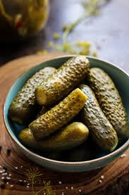

🥒 Indian Pickle (Achar) Recipe

Ingredients
- 2 cups raw mango pieces (or lemon, chili, carrot, etc.)
- 2 tbsp mustard seeds (split)
- 2 tbsp fennel seeds (saunf)
- 1 tsp fenugreek seeds (methi)
- 1 tbsp red chili powder
- 1/2 tsp turmeric powder
- Salt to taste
- 1/2 cup mustard oil (or sesame oil)
Instructions
- Wash and dry the mango pieces completely. Moisture can spoil the pickle.
- Mix all spices and salt with the mango pieces.
- Heat mustard oil until smoky, then let it cool slightly.
- Pour over the mango mixture and mix well.
- Transfer to a clean, dry jar. Seal and let it sit in sunlight for 4–5 days, stirring daily.
- Once matured, store in a cool dry place. Use as desired.
Serve With
- Parathas and Theplas
- Dal-Chawal
- Khichdi
- Puri or Roti
🫙 Tip: Always use dry spoons while handling pickles. Sunlight helps in preserving and maturing the flavors.